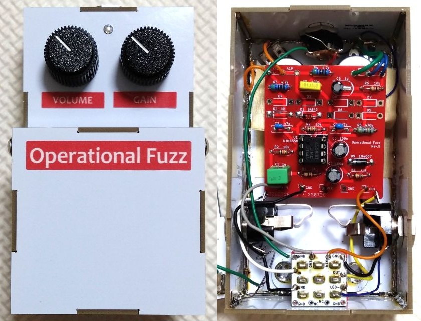
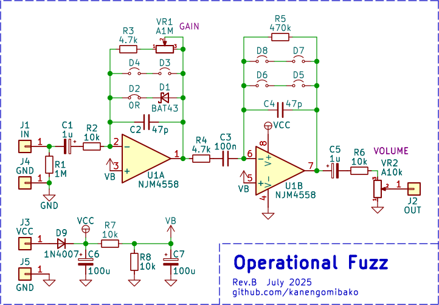
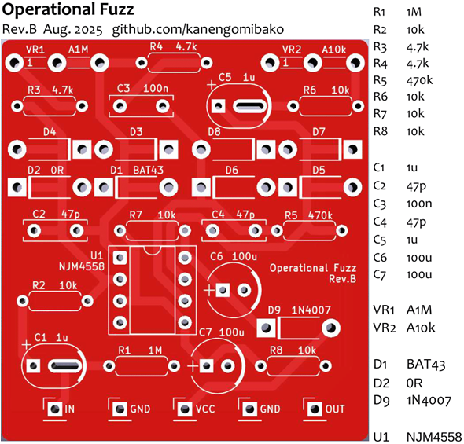

Operational Fuzz
2025年08月18日 カテゴリー：自作エフェクター（アナログ）

Fuzz Faceの音を追求する場合、トランジスタの選別やトリマーの調整がありなかなか容易ではありません（→ FFM1、FFM2）。そこで今回はトランジスタではなくオペアンプを使用し、製作・調整がしやすいファズを目指しました。
回路図
2段の反転増幅回路で構成されています。D3～D8は未実装です。完成後にいただいた情報で、TrueVAL Greenyという似た回路のペダルがあることがわかりました。「Fuzz Face OpAmp Emulator」と記載があるので、おそらく同じような方針で設計してあると思われます。
入力インピーダンス
ギターボリューム操作での音質変化を実現するためには、入力インピーダンスを低くします（→ BOSS FZ-1W）。ただ、今回の回路でのギターボリュームによるコントロールはあまりスムーズにならないかなという印象でした。ピックアップとの相性も関係すると思われます。
R2を0Ωジャンパーにしてギターを直結しても動作します。しかしながらギター以外の機器が接続されることも考えると、保護の意味で1kΩ以上の抵抗値は必要でしょう。
クリッピングダイオード
1段目の反転増幅部で片側にだけショットキーバリアダイオードを用い、偏ったクリッピングを行います。Fuzz Faceのような極度に偏ったクリッピングを目指すなら、さらにバイアス電圧をずらす必要がありそうです。ショットキーバリアダイオードは端子間容量の違いが大きく（BAT43は7pF、1N5819は110pF）、高音域の減衰に影響するため注意が必要です。
2段目の反転増幅部にはダイオードを入れず、オペアンプでの歪みとしています。他の2回路入り（デュアル）オペアンプに差し替えて好みのものを探すのもよいでしょう。もちろんダイオードを実装しても問題ありませんが、その場合は音量が下がるためR6の値を適宜小さくします。
基板
C1とC5は、電解コンデンサまたはボックス型のフィルムコンデンサどちらでも取り付け可能です。0Ω（ジャンパー）は、部品の足（リード線）の切った残りを取り付けます。ポットの左右間隔は30mmです。